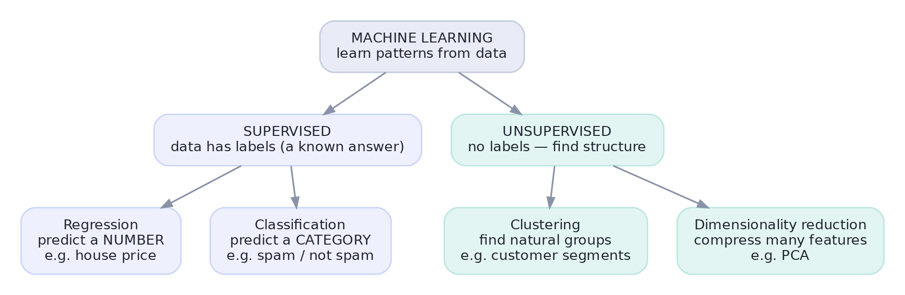
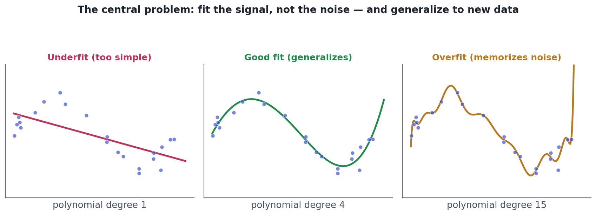
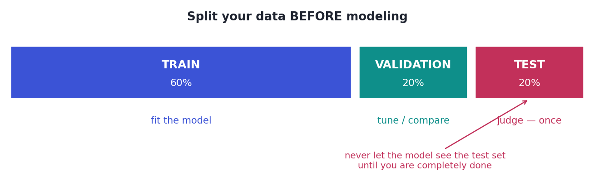

What Machine Learning Really Is
Supervised vs. unsupervised, features and targets, fit vs. generalize.
Sometimes the rules are too complex to write by hand. Nobody can enumerate every pattern that makes an email spam or a transaction fraudulent. Machine learning flips the script: instead of you writing the rules, you show a computer examples and let it learn the rules itself. That's the whole idea — and this lesson demystifies it, names its two big families, and introduces the one problem that haunts every model: telling real signal from noise.
ConceptWhat machine learning actually is
Machine learning is the practice of building models that learn patterns from data in order to make predictions or find structure — rather than following rules a human wrote. A few terms you'll use constantly:
- A feature is an input variable the model learns from (a column: square footage, day of week).
- The target (or label) is what you're trying to predict (the house price, spam/not).
- Training is the process of fitting the model to examples; the result is a model that maps features → a prediction.
Crucially, ML isn't magic or 'AI thinking' — under the hood it's fitting a function to data. Everything else is detail about which function and how you fit it.
ConceptThe two big families
Almost all classical ML splits by one question: does your data come with the answers?
- Supervised learning uses labeled data — each example has a known target. It splits again by what the target is: regression predicts a number (price, demand), classification predicts a category (spam/not, churn/stay).
- Unsupervised learning has no labels — you ask the data to reveal its own structure: clustering finds natural groups (customer segments), dimensionality reduction compresses many features into a few (PCA).

Concept · the heart of MLThe central problem: fit vs. generalize
Here is the idea that, once you truly get it, makes all of ML click. The goal is not to do well on the data you trained on — it's to do well on new, unseen data. That's called generalization, and it's constantly threatened from two sides:
- Underfitting: the model is too simple to capture the real pattern (high bias). It does poorly everywhere.
- Overfitting: the model is so flexible it memorizes the noise in the training data (high variance). It looks perfect on training data and fails on new data.

The tension between underfitting and overfitting is the bias–variance tradeoff, and managing it — choosing a model just flexible enough — is the core craft of machine learning. Every technique in this track is, in some sense, a tool for finding that sweet spot.
Concept · the golden ruleHow we catch overfitting: train / validation / test
If a model is graded on the data it studied, of course it scores well — it could just memorize. So we hold out data the model never sees during training and judge it on that. The standard is a three-way split:

The golden rule of ML: never let the model learn from the test set. Not for training, not for tuning, not even for picking features. Every peek leaks information and inflates your estimate, so the model looks great in your notebook and disappoints in production. Split first, lock the test set away, and open it once. (We'll formalize this with cross-validation in Lesson 4.7.)
Worked exampleWatch overfitting happen
Let's make it concrete with scikit-learn (Python's ML library). We fit polynomial models of increasing flexibility to noisy data and compare their score (R², where 1.0 is perfect) on the training set vs. a held-out test set. Watch the gap between them explode as the model overfits.
import numpy as np
from sklearn.preprocessing import PolynomialFeatures
from sklearn.linear_model import LinearRegression
from sklearn.model_selection import train_test_split
from sklearn.metrics import r2_score
rng = np.random.default_rng(0)
# True pattern is a smooth curve; the data has noise on top.
x = rng.uniform(0, 1, 80)
y = np.sin(2*np.pi*x) + rng.normal(0, 0.25, 80)
x_tr, x_te, y_tr, y_te = train_test_split(x, y, test_size=0.3, random_state=0)
print(f"{'flexibility':<22}{'train R2':>10}{'test R2':>10}")
for degree, label in [(1, "degree 1 (underfit)"), (4, "degree 4 (good)"),
(15, "degree 15 (overfit)")]:
poly = PolynomialFeatures(degree)
Xtr = poly.fit_transform(x_tr.reshape(-1, 1))
Xte = poly.transform(x_te.reshape(-1, 1))
model = LinearRegression().fit(Xtr, y_tr)
tr = r2_score(y_tr, model.predict(Xtr))
te = r2_score(y_te, model.predict(Xte))
print(f"{label:<22}{tr:>10.2f}{te:>10.2f}")flexibility train R2 test R2 degree 1 (underfit) 0.59 0.13 degree 4 (good) 0.91 0.76 degree 15 (overfit) 0.94 -149.88
Read the columns. The simple model (degree 1) scores poorly on both sets — it underfits. The flexible model (degree 15) scores high on train but its test score collapses — it memorized noise. The middle model generalizes best. The test score is the one that matters, because it's the only honest preview of new data. That single table is the whole discipline of model evaluation in miniature.
★ Key points to remember
- Machine learning = learning patterns from examples to predict or find structure, instead of hand-written rules. Under the hood it's fitting a function.
- Supervised (labeled): regression predicts a number, classification a category. Unsupervised (no labels): clustering, dimensionality reduction.
- The goal is generalization — doing well on new data, not the training data.
- Underfit = too simple (high bias); overfit = memorizes noise (high variance). Managing the bias–variance tradeoff is the core craft.
- Never train or tune on the test set. Split into train/validation/test; judge on the test set once.
◆ Practice▸
Show solution & reasoning
(a) Regression — predicting a number (temperature). (b) Clustering — unsupervised grouping with no labels. (c) Classification — predicting a category (fraud / legit) from labeled examples. (d) Dimensionality reduction — compressing many features into a few (e.g., PCA).
Show solution & reasoning
Repeatedly tuning against the test set leaks it into the modeling process: by selecting whatever happened to score best on those specific rows, they've fit to the test set's noise, so 95% is optimistically biased and won't hold on genuinely new data. They should tune on a validation set (or via cross-validation, Lesson 8.7) and touch the test set only once, at the very end, for a single honest estimate.
◎ Deep dive: the bias–variance decomposition, curing variance, and ML vs. statistics▸
The bias–variance decomposition. A model's expected error on new data splits into three parts: bias² (error from the model being too simple to capture the truth), variance (error from the model being so sensitive it changes wildly with the particular training sample), and irreducible noise (randomness no model can remove). Simple models have high bias, low variance; complex models the reverse. Total error is minimized in between — the 'good fit' panel. Almost every ML technique (regularization, ensembling, more data) is a lever on this tradeoff.
More data is the cleanest cure for variance. Overfitting happens when a flexible model has too few examples to pin down the real pattern, so it latches onto noise. Adding data gives it less room to wiggle and pulls the test score up toward the training score. When you can't get more data, you constrain the model instead — simpler models, regularization (penalizing complexity, Track 8/9), or ensembling (averaging many models, Lesson 8.4) — all ways to reduce variance without raising bias too much.
ML vs. statistics — two cultures, one toolbox. Classical statistics (Track 4) emphasizes understanding and inference: which factors matter, with what uncertainty, under stated assumptions. Machine learning emphasizes prediction: the most accurate output, judged by held-out performance, often with less concern for interpretability. They overlap heavily (linear regression lives in both worlds), and the best data scientists switch between the 'explain it' and 'predict it' mindsets depending on the goal — a theme we'll revisit in causal inference (Track 7).
Two near-certain questions live here. "Explain the bias–variance tradeoff" — underfitting (high bias, too simple) vs overfitting (high variance, memorizes noise), with the goal of generalizing to new data. And "why do we split into train/test?" — to estimate performance on unseen data honestly, never training or tuning on the test set. Crisp answers here signal you understand what modeling is actually for.